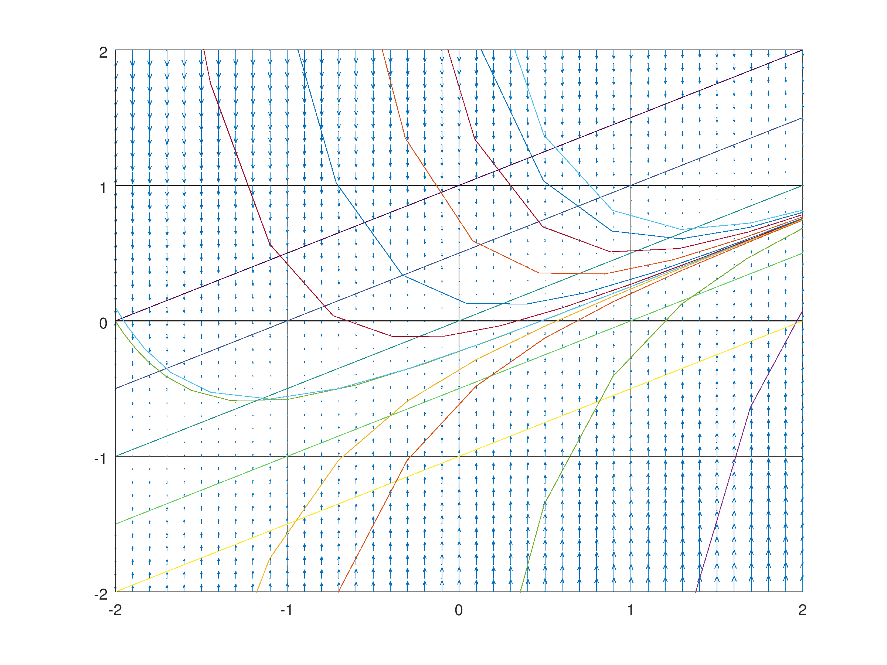
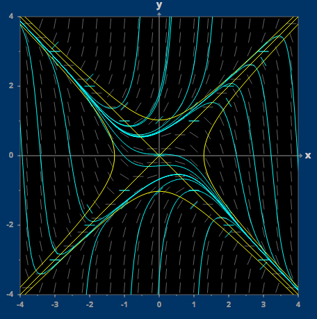
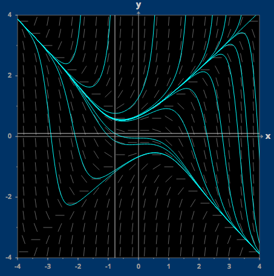

Yes, it is true that one of the integral curves is a straight line.
An integral curve can be a straight line if the derivative does not change (since the derivative of the integral curve represents the slope of the line). The change of the derivative is represented by the derivative of the derivative, so we can write: $${d\over dx}{d\over dx}y(x) = {d\over dx} \left(x - 2*y\right)$$ $${d^2x\over dx^2} = 1 - 2 * {d\over dx}y(x)$$ $${d^2x\over dx^2} = 1 - 2 * (x - 2 * y(x))$$ $${d^2x\over dx^2} = 1 - 2x + 4y(x)$$ We want these values when the second derivative is zero (i.e. the first derivative is not changing), so: $$0 = 1 - 2x + 4y(x)$$ $$-4y(x) = 1 - 2x$$ $$y(x) = -{1\over 4} + {1\over 2}x$$ Rewriting this in $$$y=mx+b$$$ form we have: $$y(x) = {1\over 2}x - {1\over 4}$$ $$\therefore \bbox[5px, border:2px solid black] {m={1\over 2}, b=-{1\over 4}}$$
If a straight line is an integral curve, it must share the same graph as one of the isoclines of the lines. This is because the equation $$$y=mx+b$$$ identifies a line with slope $$$m$$$, which is represented by an isocline with value $$$m$$$. In our example it shares the same graph as the isocline with value $$$1\over 2$$$.
The double derivative of the equation shows that the slope of the line no longer changes if it meets the line $$$y(x) = {1\over 2} x - {1\over 4}$$$, meaning that the curves become a line at that point. Therefore, the solutions are trapped in there and cannot escape, as the slope cannot change.
Critical points are points where the derivative is zero. Therefore it's pretty clear that these points can only occur if $$$x = 2*y$$$.
We can apply the second derivative test to these critical points: $${d^2x\over dx^2} = 1 - 2x + 4y(x)$$ $${d^2x\over dx^2} = 1 - 4*y(x) + 4*y(x)$$ $${d^2x\over dx^2} = 1$$
Which means that the second derivative is positive at the critical point, which in turn means that the curve must be concave-up (i.e. that the critical point is a minimum).

 It's pretty clear here that the solutions above the separatrix shoot off to great heights and solutions below crash down to become asymptotic to the lower half of a hyperbola. The separatrix is the solution that the other solutions are seemingly branching off of.
It appears as if the funnel is the line $$$y=-x+1$$$.